尊敬的各位专家、教授、同道 在这春暖花开的美好季节,由四川舞鸿医疗器械有限公司主办的:中医适宜技术临学术交流拟定于2019年5月25日在成都大鼎纪大酒店举行。届时将有国内一流的传统中 埋线专家亲临授课,并进行现场埋线及讨论一同分享课程盛宴时间:2019年5月25日13:30周六 地点:成都大鼎世纪大酒店 成都市天仁南街298号 我们诚挚邀请各位同道莅临此次会议 期待与您相聚魅力成都!
尊敬的各位专家、教授、同道 在这春暖花开的美好季节,由四川舞鸿医疗器械有限公司主办的:中医适宜技术临学术交流拟定于2019年5月25日在成都大鼎纪大酒店举行。届时将有国内一流的传统中 埋线专家亲临授课,并进行现场埋线及讨论一同分享课程盛宴时间:2019年5月25日13:30周六 地点:成都大鼎世纪大酒店 成都市天仁南街298号 我们诚挚邀请各位同道莅临此次会议 期待与您相聚魅力成都!

在这个收获的季节，我感受到各位远道而来的专家学者对我们成都武鸿鸣医疗器械有限公司的一片盛情。首先我代表四川舞鸿鸣医疗器械有限公司对对各位的到来表示热烈的欢迎和诚挚的感谢！
很荣幸我们承办此次学术交流会议，这对于我们也是一次难能可贵的学习机会，因为这次会议我们很荣幸邀请到了来自上海在埋线技术上有丰富的临床经验的两位专家为我们大家进行学术演讲和临床演示。他们分别是：
唐左阳老师——来自中医世家，自幼受其祖父影响学习中医典籍，后跟随针灸及内科名家尤蓝人主任，师从中医内科名专家郭天邻教授。擅长针药结合治疗代谢病，儿科，妇科。
刘静老师——师从上海龙华医院分院中医外治车兆勤教授，擅长中医外治（针刀疗法，拔针疗法，无痛腹针，学位埋线等）
用我们热烈的掌声欢迎他们的到来。
四川舞鸿鸣医疗器械有限公司一直以重学术为理念，而这也源自于公司的总经理程鸿先生的影响，下面掌声有请本次学术会议承办方四川舞鸿鸣医疗器械有限公司总经理程鸿先生上台
欢迎词 尊敬的各位领导、各位专家、医学同仁及朋友们: 大家下午好! 盛夏时节逢盛会,天府之都迎嘉宾! 我们舞鸿鸣很荣幸能够承办本次中医适宜技术临床学术交流会,这对我们来说是一次极为珍贵的学习机会,因为我们很荣幸地邀请到唐佐阳、刘静两位有着 丰富临床经验的专家为我们进行精彩的学术演讲和现场演示。知识的交流,智慧的碰撞,你们将为我们带来一场思想盛宴和学术大餐。我们也将以此为契机,广 纳真知灼见,广聚学术资源,广交学术人才,开阔视野,激励创新,为川渝两地的中医适宜技术带来更大的机遇。 在此,我谨代表舞鸿鸣全体工作人员,对莅临本次会议的各位领导、专家 同道表示热烈的欢迎和衷心的感谢! 最后,预祝会议圆满成功!谢谢大家!
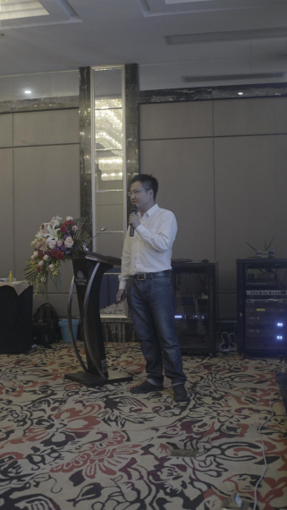 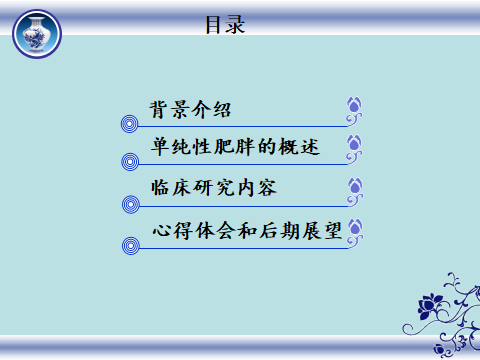唐佐阳，男，毕业于上海市中医药大学医疗系，目前系上海市黄浦区中西医结合医院市级中医优势专科内分泌科的学术继承人，内分泌科副教授。师承孟河医派第三代传人、针灸及内科名家尤益人。担任上海中医药学会中医全科专业委员会青年委员，上海市中西医结合学会内分泌代谢专业委员会青年委员，上海市针灸学会埋线专业委员会常务委员。 上海市黄浦区中西医结合医院降脂专科成立1997年。21年以来我们通过不断总结名老中医的临床经验并运用现代医学的研究方法，以内服法与外治法相结合治疗内分泌和脂质代谢相关疾病为特色的传统中医振兴之路。在我科的发展道路上分为二期，前8年以内服中药为主，后12年更趋向以内外兼治法为核心。 目前治疗的主要病种：肥胖症、高脂血症、非酒精性脂肪肝、肥胖型糖尿病、代谢综合症候群、空腹血糖受损等。 微创埋线治疗肥胖症成为我科最具有疗效的一项特色治疗项目自从2007年以来，我科运用埋线技术治疗肥胖症的病例达到了1078例。 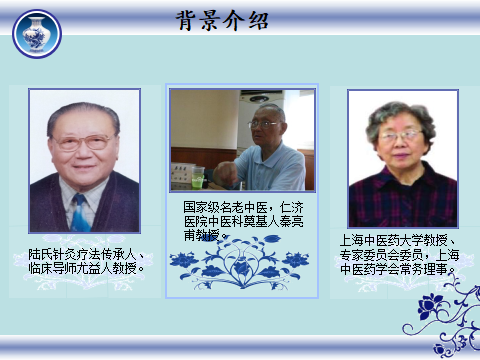 初期我们用羊肠线埋线法收集了199例单纯性肥胖病例，但是由于材料技术的原因，出现了术后包块和免疫排斥反应，导致一度试验无法开展，后来经过大量文献查找并和埋线专业的专家讨论后决定使用目前生物植入物领域最安全的PGA线体，最终申报市科委课题做了符合纳入标准的病例数是96例。可以说医学周别学科的发展拯救埋线这一技术。下面我就介绍一下，我科的这项96例埋线法治疗肥胖的课题. 单纯性肥胖即为无内分泌相关疾病的肥胖，是肥胖症中最常见的类型，属于营养代谢障碍的范畴，是机体进食热量高于消耗量，从而造成脂肪的过度积聚而出现的实际体重超过标准体重20%以上的病理状态。体重指数（BMI）25~29.99和≥30分别为肥胖和超重。
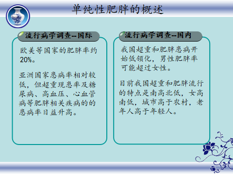
预防肥胖的流行是21世纪前五十年世界各国面临的最大的公共卫生挑战之一！
澳大利亚、法国、美国、荷兰的肥胖经济费用占国家卫生费用的2%~7%。如美国每年用于肥胖防治的直接费用为516亿，间接费用为476亿。我国作为发展中国家的人口大国，经济资源和卫生资源有限，尽早开展肥胖防治，可取的较好的经济和社会效益。
【纳入标准】
(1)单纯性肥胖患者18-65岁；
(2)诊断标准符合第五届全国中西医结合肥胖症研究学术会所制定的标准，即标准体重(kg)-[身高(cm)-100]*0.9(男性)或0.85(女性);实测体重超过标准体重20%即可；
(3)患者签署知情同意书。
【排除标准】
(1)继发性肥胖病，如内分泌系统疾病所导致的肥胖如肾上腺皮质功能亢进症、甲状腺功能降低，垂体或性腺功能障碍等；
(2)药物服用所导致的肥胖；
(3)并发有较为严重的心、脑、肺、肾、血液病等器质性疾病者及精神疾病障碍者。
【疗效标准】
根据第五届全国中西医结合肥胖症研究学术会所制定的标准及2003年卫生部疾病控制司发布的《中国成人超重和肥胖症预防控制指南》制定的疗效标准。
临床试验过程--研究对象
最终符合纳入标准的病例数是96例，按就诊先后顺序采用查随机数字表法将患者随机分为治疗组和对照组,每组48例。治疗组治疗期间脱落4例,对照组脱落8例,最终共84例纳入统计。治疗组44例中男31例,女13例;平均年龄为(43±12)岁;平均体重指数(BMI)为(31.4±2.9)kg/cm2;平均腰围为(81.4±3.6)cm,平均臀围为(108.8±4.2)cm;平均肥胖度为(40.4±11.2)%;平均血甘油三酯(TG)为(2.27±0.6)nmol/L,平均瘦素(LP)为(9.4±2.1)ng/mL。对照组40例中男26例,女14例;平均年龄为(45±13)岁;平均BMI为(32.2±2.5)kg/cm2;平均腰围为(80.2±4.7)cm,平均臀围为(106.4±6.2)cm;平均肥胖度为(38.9±8.7)%;平均TG为(2.28±0.8)nmol/L,平均LP为(9.5±2.3) ng/mL。两组患者性别、年龄、腰围、臀围、肥胖度及实验室指标比较,差异无统计学意义(P＞0.05),具有可比性。
临床试验过程--治疗方法
基线治疗：两组均在相同饮食结构和运动量的基础上进行,饮食结构限制脂肪、甜点的摄入,摄取总量为1200～1500 kcal/d,运动量为每星期不超过3次且每次不超过1 h的有氧运动。
治疗组：治疗组按照补脾泻胃的原则取穴，主穴取天枢、丰隆、足三里,配穴取大横、腹结、带脉,阿是穴(脂肪容易累积处)。PGA 线体(规格 2/0， 长度 1 cm)，一次性埋线针(规格：0.9)，
每周治疗一次，连续治疗4个月。
对照组：服用二甲双胍片（商品名：格华止；厂家：中美上海施贵宝制药有限公司；规格：1粒500mg），每次1粒，每天两次，连续服用4个月。
临床试验过程—资料采集和随访
观察两组治疗前后及随访1年体重、腰围、腹围及相关实验室指标(TG和LP)的变化情况。两组随访期间饮食结构及运动量同治疗期,且不采取其他减重疗法。
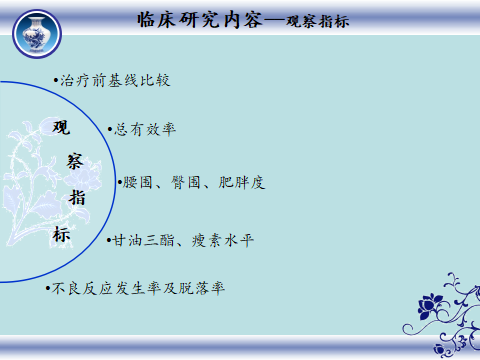

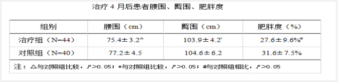
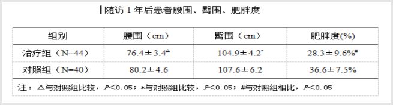
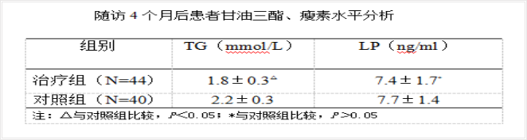
心得体会和后期展望
羊肠线: 肠衣经加工泡制杂质相对较多，存在遗传病毒和致敏因素。
胶原蛋白线: 纯度较高，减少了致敏因素。刺激量大，异体蛋白的免疫反应还是难以消除，生物相容性低。
PDS(PDO)线体: 生物相容性高，表面光滑，细菌栖身少，抗张强度大，吸收时间过长，易引起不吸收皮下包块肿块
PGA线体 :
提取于玉米和甜菜，不含任何动物源及加工成分，机体代谢后可降解为二氧化碳和水，具有较好的组织相容性，在临床应用中值得推广。但是由于是多层绞箍而成，容易细菌栖身
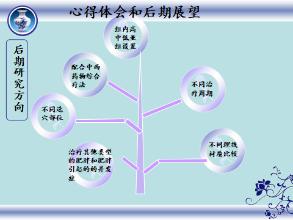
关于肥胖相关性肾病，一些个人体会：肥胖相关性肾病是一种以肥胖、蛋白尿、不伴水肿和血白蛋白正常为特点的临床综合征。我科临床上碰到单纯性的肥胖相关性肾病比较少，常见的肥胖引起的糖尿病肾病。查阅科室病史档案，有确切记录的只有3例，不过通过埋线改善体重，可以比较好的改善蛋白尿的症状，不过目前只是个例，没有前瞻性的研究。方法：埋线取穴丰隆、三里、天枢、大横、肾俞、膀胱腧、志室穴等
肥胖的标准（自我测量）
1.标准体重（kg）=[身高(cm)-100]×0.9
2.体重指数(BMI)=体重(kg)／身高（cm）2 18≤BMI≤23为正常
3.腰围(腰部周径WC)：男性腰围≥85cm，女性腰围≥80cm者，可认为是肥胖
4.腰臀比值(腰臀比WHR)=腰围(cm)／臀围(cm)，腰臀比大于0.72为肥胖症
5.皮肤皱褶卡钳测量法：上臂三角肌外皮下脂肪厚度和肩胛角皮下脂肪厚度，二处相加之和。男性大于4cm，女性大于5cm则为肥胖症
6.身体脂肪率测定、阻抗法、腹部CT横断层法（内脏脂肪面积大于100cm）、超声波法（腹壁脂肪指数1或者0.7）
正确的数据获取方法
体重：清晨如厕后用早餐前，以贴身衣物为好
身高：一般成年后变化不大
腰围：以肚脐水平一周
臀围：臀部的最大周径
我属于哪种肥胖？？?
定义：肥胖症是由于内因（基因）或外因（饮食行为）等多种因素引起进食热量多于消耗热量，其剩余热量以脂肪形式储存于体内，经过一定时限，超过生理需要量，并有损健康，已形成病理状态，必须进行医学减肥者，称为肥胖症。
分类： 女性型（Rubens型糖尿病高发）-男性型（Falalctaff型） 中心型（躯干型肥胖）、上半身肥胖型（内脏型肥胖最具有危险因素型与多种内科疾病相关死亡率高）-周围型肥胖 单纯性肥胖症-继发性肥胖症
发病机制： 与脂联素、脂肪细胞活性素、瘦素、前提分子和黑色皮质素受体的遗传基因异常、脂肪细胞的肥大和增殖有关。
单纯性肥胖和继发性肥胖的区别
有无原发疾病是区分二者的最重要的标准 甲状腺功能减退、库欣综合征、多囊卵巢综合征、特发性水肿、脑垂体腺瘤、代谢综合征等 长期服用激素类药物如地塞米松、避孕药 单纯性肥胖的分类 体制性肥胖（双亲肥胖）：遗传因素 过食性肥胖（获得性肥胖）：摄入过多，消耗不够
肥胖的危害: 心脏、 肺脏、 肝胆、 肾脏和痛风、 动脉、 糖尿病、 高血压和中风、 恶性肿瘤和关节炎、 内分泌和生殖系统

西药的副作用和不良反应 西布曲明常见副作用有血压升高、心率加快、厌食、失眠、肝功能异常等危害严重的副作用，应该在医师的指导和监测下服用。 奥利司他常见副作用有油性斑点、胃肠排气增多、大便紧急感、脂肪（油）性大便、脂肪泻、大便次数增多和大便失禁，可使维生素A、D和E的吸收减少，应该在医师的指导和监测下使用。 怎样的减肥方法才是健康的呢？ 绿色健康的减肥方式有哪些？ 中医疗法是安全、可靠、健康的减肥方式 体穴针刺 穴位埋线 耳穴压豆 电针治疗 局部低频理疗 拔罐疗法 针刀、刃针法 温针药灸法 中药辩证施治法 穴位敷贴法 推拿法 药茶降脂法 药物局部外敷法 微波理疗法 气功法 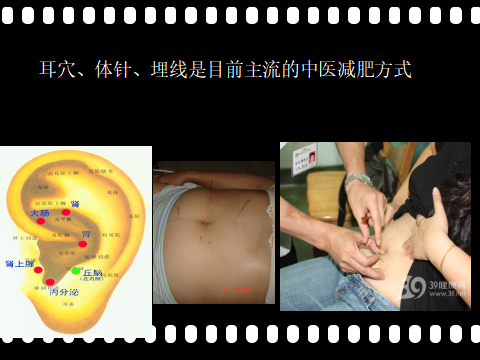
肥胖症的埋线治疗
1. 辨证分型：
根据《单纯性肥胖的诊断及疗效评定标准》中国中西医结合杂志1998 年5 月第18 卷第5
期和上海科技出版社出版的第五版《中医内科学》教材并结合我科多年临床经验将单纯性肥胖的主证定为胃强脾弱证并有以下五个次证三个兼证。
次证
2. 胃热湿阻型：
肥胖,头胀,眩晕,消谷善饥,肢重,困楚怠
惰,口渴,喜饮,脉滑数,舌苔腻微黄,舌质红。
3. 脾虚湿阻型：
肥胖,浮肿,疲乏无力,肢体困重,尿少,
纳差,腹满,脉沉细,舌苔薄腻,舌质淡红。
4. 肝瘀气滞型：
肥胖,胸胁苦满,胃脘痞满,月经不调,闭经,
失眠多梦,脉细弦,苔白或薄腻,舌质暗红。
5. 脾肾两虚型(肾脾阳虚)：
肥胖,疲乏,无力,腰酸腿软,阳痿,
阴寒,脉沉细无力,苔白,舌质淡红。
6. 阴虚内热型：
肥胖,头昏眼花,头胀头痛。腰痛酸软,五心
烦热,低热,脉细数微弦,苔薄舌尖红。
兼证
①瘀证：胸闷刺痛，肢体麻木或疼痛，疼痛不移，肌肤甲错，健忘心悸，心烦失眠，或中风偏瘫，唇舌紫暗，舌质黯，有瘀斑，舌下脉络青紫迂曲，苔薄白脉弦或沉而涩。
②痰证：嗜食肥甘，形体肥胖，呕恶眩晕，口黏痰多，食油腻而加重，舌体胖大，苔白厚腻，脉滑。
③湿证：头重昏蒙，四肢沉重，遇阴雨天加重，倦怠嗜卧，脘腹胀满，食少纳呆，便溏或粘滞不爽舌胖大，边齿痕，苔腻，脉弦滑。
1.渊源：来源于著名针药结合名家尤益人教授的补脾泻胃法治疗单纯性肥胖。
2.中医机制和原理：尤老认为肥胖和高脂血症的病机在于胃强脾弱，胃主受纳，胃气强则多饮多食易饥，脾主运化水谷、运化水液，脾气虚则水谷精微不化停滞则成痰浊膏脂，摄入过多而运化不足则成肥胖之根源。
肥胖症的埋线治疗个人经验
1.常用穴位：脾俞、胃俞、肝俞、肾俞、肺俞、中脘、上脘、建里、天枢、大横、水分、关元、气海、带脉、足三里、丰隆、上巨虚、下巨虚、箕门、髀关、三阴交、太冲等。
2.配穴原则：根据辨证辨经确定所属经络和证型，灵活使用取8~15穴位。
背部与腹部穴位同取
躯干与四肢穴位同取
互为表里经络穴位同取
局部与全身穴位同取
穴位本身作用与经络循行部位作用同取
3. 埋线手法：穴位埋线有无补泻手法？
4.消毒隔离：医疗安全的保障
5.材料选备：原则是安全、有效，性价比、效能比、效时比高。目前我科最常用的是PGA线体，聚乙丙交酯材料来源于植物，在人体内降解为二氧化碳和水，PGA线具有良好的生物相容性和生物可降解性，降解产物为二氧化碳和水，有研究表明其极少产生过敏、细胞毒性反应、极少形成组织纤维包膜，因此在临床运用时可以有效减少羊肠线所产生的过敏、排斥、感染、组织包块、疤痕等不良反应。
6.不良反应：迄今为止我共用PGA线体进行了9956例有记录的微创埋线治疗，共发生5例较为严重不良反应事件，其中3例感染，1例过敏；共发生104例皮下团块包裹。经过积极处理所有不良反应病例都得到改善和缓解可以继续疗程，1例过敏病例终止治疗，2例因疼痛而终止。
个人体会交流：
1. 诊断明确：单纯性肥胖症是微创埋线治疗的适宜疾病，排除继发性肥胖。
2. 确定类型：女性？男性？中心型？内脏型？
3. 材料科学的发展运用新型植入材料的使用PPDO
材料（聚二氧杂环己酮）的开发，延长治疗周期，
因为是单丝线体，更好地减少了感染的可能。
4. 埋线深度的探讨：尤其在腹部，结合B超定位。
5. 护理在微创埋线领域的作用：消毒隔离与效率
6. 个人对微创埋线术式的一些改进
7. 加强锻炼。对肥胖患者来说，运动尤为重要。跑步 太极拳骑自行车都是合适的运动
8. 保持乐观的精神状态，合理安排生活节奏，减少压力对心情的影响。加强与外界的交往。健康的精神状态，对于抑制食欲、预防肥胖大有好处。
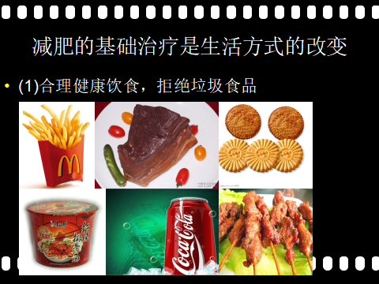
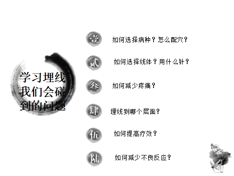
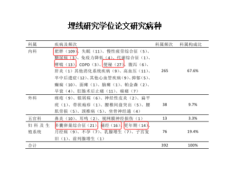

【适应症】
微创埋线的适用范围非常广泛，凡是针灸的适应症大部分都可用本法治疗。如颈腰椎疾病、神经痛、痹证、 中风、面瘫、三叉神经痛、痿证、扭挫伤、面瘫、头痛、眩晕、失眠、心悸、心痛、高血压、感冒、咳嗽、哮喘、支气管炎、胃痛、胃炎、胃溃疡、结肠炎、腹痛、泄泻、乳痈、肠痈、风疹、痤疮、银屑病、目赤肿痛、咽喉肿痛、中耳炎、鼻炎、痛经、不孕症、月经不调、崩漏带下、小儿麻痹后遗症、单纯性肥胖、甲亢等。
【禁忌症】全身发热或感染，各种严重性疾病、过敏性体质、肝肾功能不全及传染病患者；明显的出凝血时间延长或血小板减少、血友病及出血倾向；严重糖尿病、心脏器质或功能疾病；严重精神疾病或不合作病人；剧烈运动、酒后、过饱和过饥患者；严重水肿患者。
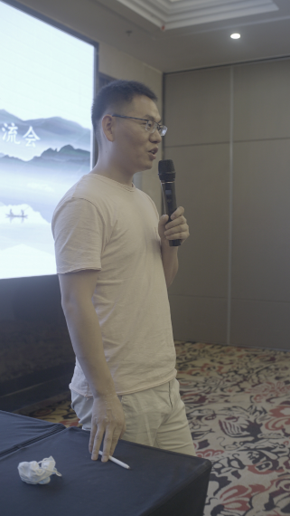
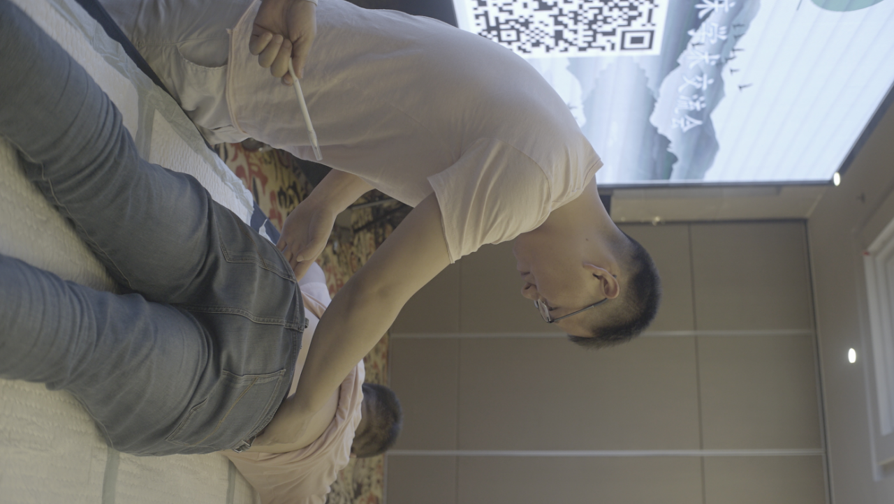
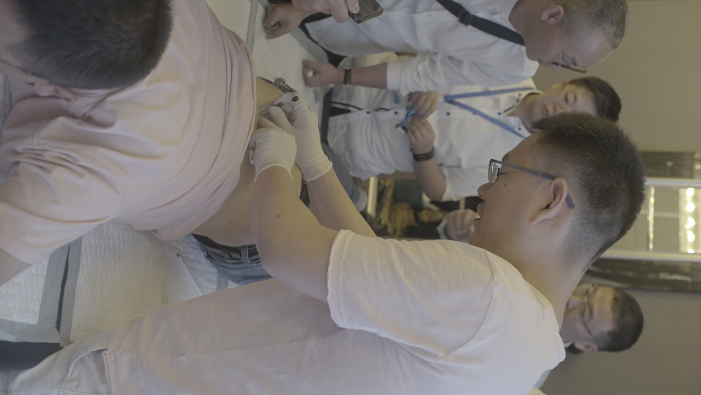
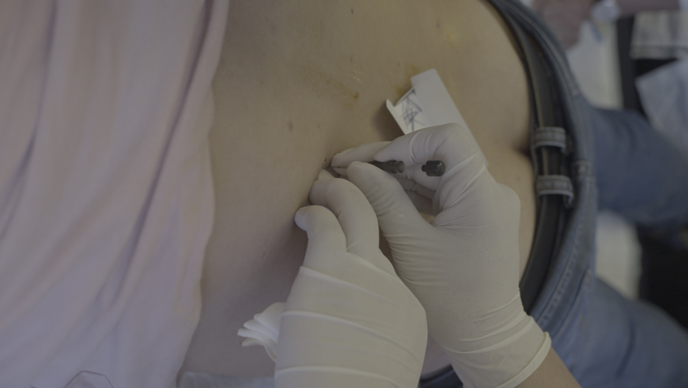
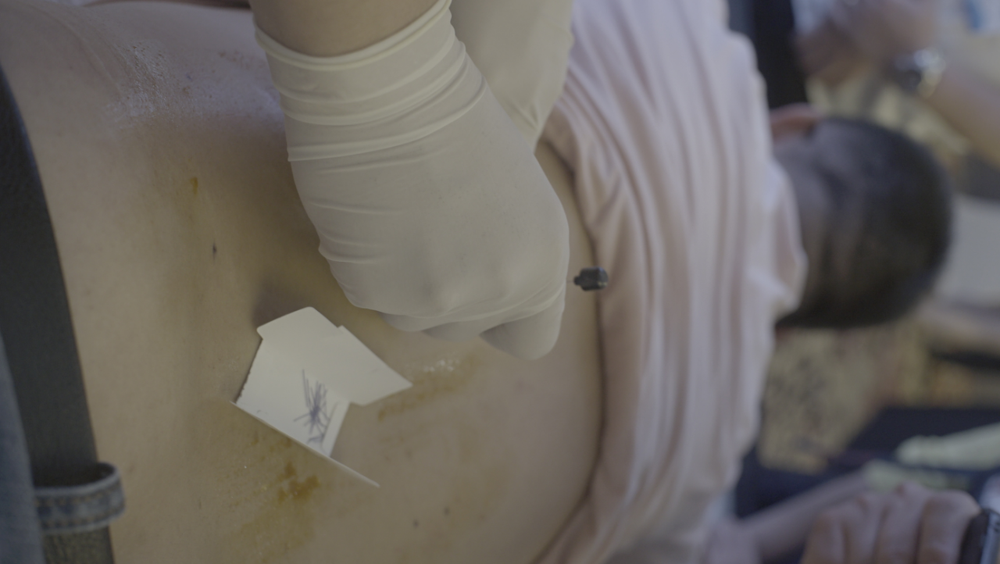
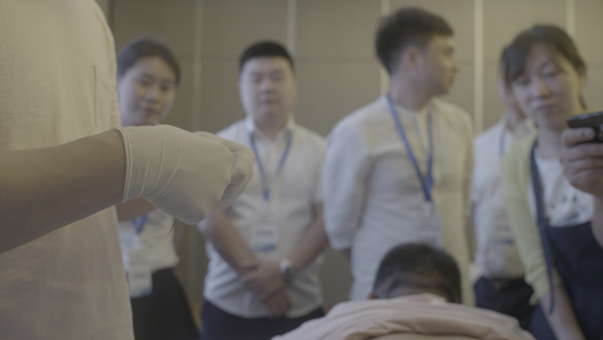
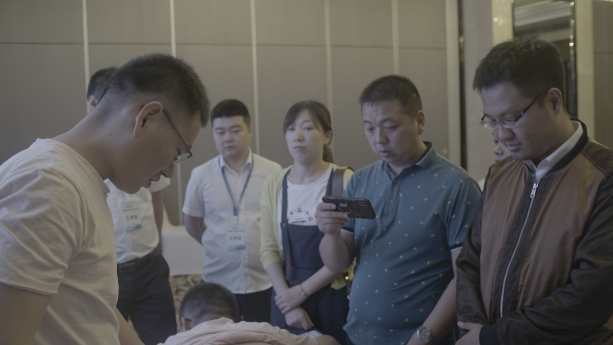
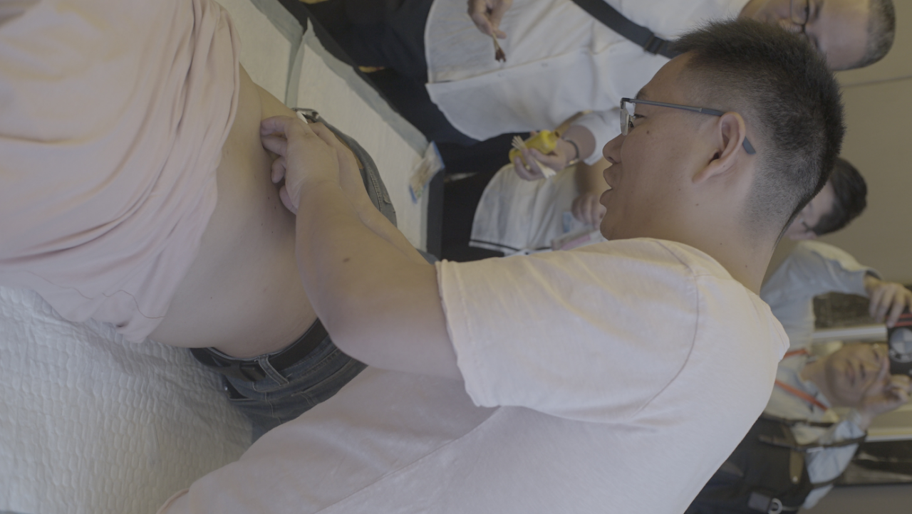

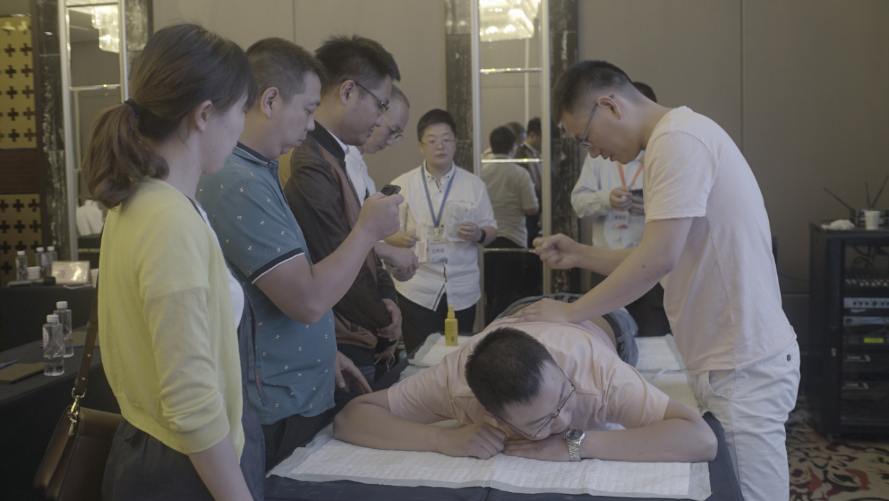
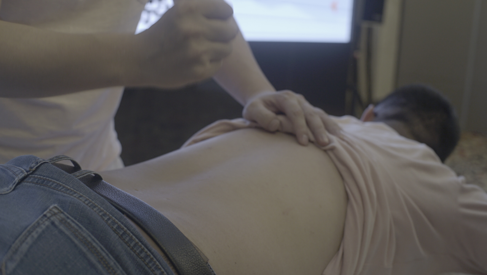

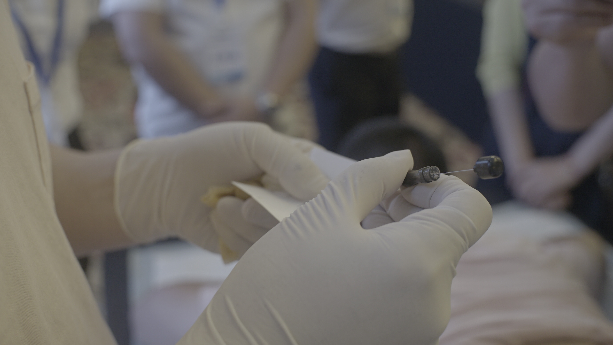